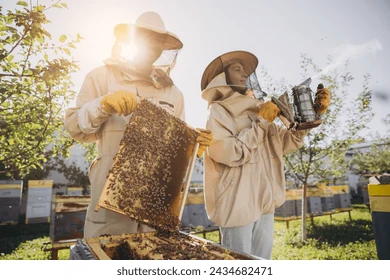

Acerca de nosotros
¡Bienvenido a nuestra página!
En Honey moon, somos padre e hija y queremos contarte que nos apasiona la apicultura y la producción de miel pura de la más alta calidad. Con años de experiencia y dedicación, nos hemos establecido como una empresa comprometida con la sostenibilidad, el bienestar de nuestras abejas y la satisfacción de nuestros clientes. Nuestra misión es ofrecer productos naturales y saludables que endulcen tu vida de manera natural.
Nuestros productos
Nuestra gama de productos incluye una selección de mieles puras y naturales, directamente de nuestras colmenas a tu mesa. Ofrecemos:
- Miel de flores silvestres: Con un sabor complejo y aromático, recolectada de diversas flores silvestres.
- Miel de eucalipto Con propiedades balsámicas y un sabor suave y refrescante.
- Miel de acacia: Con un sabor delicado y dulce, ideal para endulzar bebidas y postres.
- Miel de manuka: Reconocida por sus propiedades medicinales y su sabor único.
Proceso de elaboración
Nuestro proceso de producción se basa en prácticas tradicionales y sostenibles:
- Cuidado de las colmenas: Nuestras abejas son cuidadas en un entorno natural y libre de pesticidas, garantizando su bienestar y la calidad de la miel.
- Recolección: La miel es recolectada de manera artesanal, respetando el ciclo natural de las abejas.
- Filtrado y envasado: Utilizamos métodos de filtrado que preservan las propiedades naturales de la miel, y envasamos nuestros productos en recipientes ecológicos y reciclables.
- Control de calidad: Cada lote de miel es sometido a estrictos controles de calidad para asegurar que llegue a ti en perfectas condiciones.